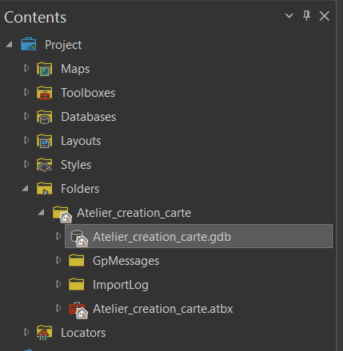

Création d’une carte dans ArcGIS Pro
Formation CEF — Atelier pratique

Contexte de l’atelier
Vous venez de finir l’écriture d’un article scientifique ou de votre mémoire / thèse de fin d’études et vous désirez créer une carte de localisation de tous les points d’inventaire réalisés lors de votre collecte de données terrain. L’objectif est de publier une carte de qualité qui montre la répartition spatiale de vos points d’échantillonnage, ainsi que le contexte plus général dans lequel se trouve votre aire d’étude.
Dans cet atelier, nous allons mettre en pratique plusieurs des éléments couverts par la formation « ArcGIS Pro pour les nuls » tout en mettant de l’avant certaines spécificités liées à la production de ce type de carte.
Les données nécessaires à la réalisation de cet atelier vous sont fournies dans une géodatabase (.gdb) transmise par courriel.
Fichiers nécessaires
| Source | Classe d’entité / Table |
|---|---|
Atelier_creation_carte.gdb\Donnee_EX01 |
Feux_s (contour du feu à l’étude) |
Lieu_habite_s (villes du Québec) |
|
N3_DOM_BIO_s (domaines bioclimatiques) |
|
Prov_qclcc_s (province du Québec) |
|
Table (hors .gdb) |
Site_etude_p.csv |
Atelier_creation_carte.gdb\Donnee_supp |
AOI (Area of interest) |
FEUX_PT_ORI_clipAOI |
|
META_FEUX_clipAOI |
|
| * Classification écologique | N1_[...], N2_[...], N4_[...], N5_[...] |
| ** Carte écoforestière | PEE_DS, PEE_EN_PG, PEE_ORI_CLIP_FEU |
1 Créer un projet dans ArcGIS Pro
Ouvrir ArcGIS Pro et créer un nouveau projet « Map ».
Nommer le projet « Carte_localisation » et choisir le dossier (sur votre clé / disque dur externe) où seront vos données. Garder le crochet qui créera un nouveau dossier pour ce projet.
Dans l’onglet View, cliquer sur Catalog view. Sous le dossier Folders, vous trouverez un dossier « Carte_localisation » avec une maison : c’est là que vous enregistrerez les données que vous modifierez pour produire votre carte.
Pour accéder à la géodatabase (
.gdb) qui contient les données de base, cliquez sur Folders dans l’arborescence du catalogue, puis sur l’onglet Insert → Add Folder, et naviguez jusqu’au répertoire où vous avez enregistré les données fournies. Cette action fera un « pont » entre ArcGIS et le dossier de données.
Il existe aussi un Catalog Pane, version réduite du catalogue, sur la droite de l’écran.

Clic sur
Atelier_creation_carte.gdb\Donnee_EX01et prenez connaissance de tous les fichiers et des métadonnées associées (cliquez sur chaque couche et regardez, à droite : Metadata, Geography et Table).Toujours dans le panneau Catalog, vérifiez le système de coordonnées de chacun des fichiers avec clic-droit → Properties → Spatial Reference. Si nécessaire, reprojetez les couches qui ne sont pas projetées ou qui ne sont pas dans le bon système.
Clic sur Map : on voit le Québec. Dans l’onglet Map, choisissez l’icône Basemap puis « Light Gray Canvas ».
NotePour confirmer la référence spatiale du projet : clic-droit sur Map → Properties → Coordinate Systems. Nous allons travailler en NAD 1983 Québec Lambert.
Ajoutez les couches contenues dans le Feature Class Dataset
Donnee_EX01avec l’icône Add Data → Folders → Donnee_atelier → Atelier_creation_carte.gdb. Vous pouvez ajouter les 4 couches d’un seul coup.
Le projet emprunte toujours la référence spatiale de la première couche ajoutée. Toutes les autres s’afficheront à la volée pour s’y aligner.
2 Importer, afficher et créer un feature class à partir d’un fichier Excel ou CSV
(Peut aussi être en format .dbf — « data base file ».)
Dans la géodatabase du projet, vous constaterez qu’aucun fichier de points ne s’y trouve : le fichier de points est enregistré au format
.csv. Deux options s’offrent à vous.Option i — via Map : Add Data, clic sur le fichier
Site_etude_p.csv. Dans l’arborescence des couches, clic-droit sur la table → Open pour déterminer quelles colonnes stockent les coordonnées géographiques (souvent LAT/LONG, ou XY, POINT_X, POINT_Y, etc.). Fermez la table. Clic-droit sur la tableSite_etude$→ Create points from table → XY Table To Point. Dans l’outil, remplir : Output =.gdb\Donnee_EX01\Site_etude, X field =POINT_X, Y field =POINT_Y, Coordinate System = cliquer sur le petit globe, chercher « 1983 » dans North America / Canada pour NAD 1983. OK.Option ii — via Catalog : Sur la table
.csv, clic-droit → Export → Table to Point Feature Class. L’outil XY Table To Point s’ouvre à droite dans le panneau Geoprocessing. Précisez les mêmes paramètres que ci-dessus.Une fois l’étape complétée, retournez dans la
.gdbmaison où vous avez enregistré la couche, clic-droit → Add to map.
3 Créer la carte générale de localisation avec fond « gris neutre »
- Dans le panneau d’arborescence (Drawing order), clic-droit sur Map → Properties, puis dans General → Name, renommez la carte « Carte_site_etude ».
- Dans cette carte, ajoutez le fond de carte et les couches suivantes :
- Fond de carte : « Light Gray Canvas »
Feux_sSite_etude_p- Quelles autres couches (feature class) ajouteriez-vous au projet ?
- En prévision de l’assemblage de la carte, dans quel ordre positionneriez-vous les couches dans l’arborescence, et pourquoi ?
- Modifions maintenant la symbologie des couches en préparation à l’assemblage :
Feux_s: contour rouge, fond rouge + transparence 50 %.Site_etude: passez de Single symbol à Unique values, et dans Field 1 sélectionnez le champ qui contient la classification des sites par essence d’arbre. Ajustez les symboles de chaque essence (couleur, taille) en vous assurant qu’ils sont bien visibles sur le périmètre du feu.- Les couleurs / transparence du feu ne vous conviennent pas ? Faites des tests, tout en gardant l’information claire et visible !
- Si vous avez ajouté d’autres couches, attribuez-leur aussi une symbologie appropriée.
4 Créer une mise en page cartographique (layout)
Dans l’onglet Insert → New Layout, naviguez jusqu’à Custom page size (tout en bas du menu déroulant).
- Dans Layout properties → Page Setup, changez les Page Units pour Millimeter, largeur 190 mm, hauteur 120 mm. Ceci correspond à une demi-page / deux colonnes selon les normes Elsevier.
Dimensions maximales des revues- Elsevier : largeur 190 mm × hauteur 240 mm
- Springer : largeur 174 mm × hauteur 234 mm
Consultez toujours les normes de la revue visée. Il est plus simple de définir les bonnes dimensions dès le départ que de redimensionner la figure ensuite.
Une page blanche s’affiche. Renommez « Layout » dans l’arborescence pour « Carte de localisation ».
Ajoutez des guides pour conserver une marge : clic-droit sur la règle → Multiple guides → Both, Offset from edge, 10 mm.
AstuceIl est toujours possible de déplacer les guides manuellement en cliquant sur la flèche bleue associée à un guide, directement sur la règle.
Cliquez sur Map Frame et sélectionnez la carte « Carte_site_etude ». Tracez la zone de façon qu’elle « snap » sur les guides.
5 Ajouter les éléments d’habillage graphique
- Flèche du nord
- Grille de coordonnées géographiques
- Échelle graphique
- Crédit « Esri, TomTom, Garmin » — que faire avec ça ?
- Légende, date, auteurs et sources des données
6 Ajouter une emprise — contexte géographique global
(Carte à plus petite échelle.)
Dans l’onglet Insert, créez une New Map. Renommez-la « Carte_generale ».
Changez le Base Map pour Light Gray Canvas (identique à « Carte_site_etude »).
Ajoutez :
- le périmètre du feu ;
- le périmètre de la province du Québec ;
- la couche des domaines bioclimatiques ;
- la couche
Lieu_habite.
AvertissementValidez pour chaque couche la projection géographique (ou son absence) et, si nécessaire, reprojetez.
Questionnez-vous sur le drawing order : quelle couche devrait apparaître en premier ? Ordonnez les couches selon ce que vous croyez être la meilleure ordination.
Apportez plusieurs modifications à ces couches :
- Domaines bioclimatiques : clic-droit → Properties → Definition Queries. Nouvelle requête : champ
NOM_DB, is equal to, « Pessière à mousses ». Apply dans la requête, puis Apply avant de fermer. - Sur cette même couche : Symbology → contour gris/noir largeur 0,7, fond vert foncé, transparence 50 %.
- Feux : répliquez la symbologie de la carte précédente.
- Province du Québec : contour noir/gris largeur 0,7, fond aucune couleur OU fond blanc à 75–85 % de transparence.
- Lieu habité : comment n’afficher que Québec, Chicoutimi et Sept-Îles ? Choisissez une symbologie point / cercle noire, taille ≥ 10 px. Puis clic-droit → Labeling properties : effacez le contenu de Expression et double-cliquez sur
NOM_DBdans Fields. Dans l’onglet Symbol, police Arial taille 10, ajoutez un Halo blanc de 1 pt. Activez enfin la case Label sur la couche.
- Domaines bioclimatiques : clic-droit → Properties → Definition Queries. Nouvelle requête : champ
Retournez sur « Carte de localisation » (mode layout), onglet Insert → Map Frame → Carte_generale, et dessinez le cadre dans le haut à droite de la page.
- Pensez à la position et à la taille optimales de cette carte par rapport à l’ensemble des éléments graphiques.
- Gardez en tête qu’on devra aussi ajouter une légende !
Ajustez le zoom pour voir l’ensemble du Québec (on veut montrer que le feu se situe dans la pessière à mousses et comprendre où celle-ci se trouve). Onglet Layout → Activate (ou clic-droit → Activate) pour changer le zoom ; ou via l’échelle numérique en bas à gauche (ex. « 1 : 20 000 000 »).
Terminé : onglet Layout → Close Activation.
Toujours en mode Layout, Insert → Extent Indicator, choisissez Map Frame ou Map Frame 1 selon l’ordre d’ajout. Le cadre à l’échelle se dessine automatiquement.
ImportantSélectionnez au préalable la Map sur laquelle vous désirez voir l’emprise s’afficher !
Pour enlever les sources du fond de carte : Insert → Dynamic Text → Service Layer Credits, puis déplacez-les hors de la page par un clic-glisser.
7 Ajouter une légende
Cette étape est ingrate pour tout utilisateur d’ArcGIS Pro. Patience !
Insert → Legend, puis tracez le contour de la fenêtre de légende.
AstuceTracez cette zone en dehors du cadre cartographique : nous aurons plusieurs manipulations à y faire.
Suivez à l’écran la suite des manipulations.
Ajoutez la date de création, la référence spatiale (projection) ainsi que le nom du ou des auteurs, en format texte dans la légende.
NoteOn demande souvent de retirer ces éléments, mais une carte doit être auto-portante : il est largement préférable d’y inclure toutes les informations de référence.
Note éditoriale : gardez vos légendes le plus simple possible ! Le temps de production explose si vous faites un affichage complexe dans ArcGIS Pro. Dans ce cas, privilégiez un logiciel comme Adobe Illustrator.
8 Exporter la carte dans un document
Quand vous êtes satisfait, exportez la carte (jpg, pdf, emf, etc.) : onglet Share → Layout (flèche verte), puis choisissez la résolution, le type de fichier et l’emplacement.
AvertissementPortez attention à la résolution demandée par la revue scientifique (et aux normes de formatage de votre institution).
Sauvegardez le projet.
C’est le temps d’insérer votre carte dans votre article !
9 Exercices supplémentaires
- Faire l’habillage de la carte — surtout la création de légende — dans Inkscape ou Adobe Illustrator.
- Intégrer un ou des graphique(s) dans votre carte.
- Créer / modifier le basemap de votre carte dans ArcGIS Online.
- Agencer différentes couches pour créer un basemap plus élaboré.